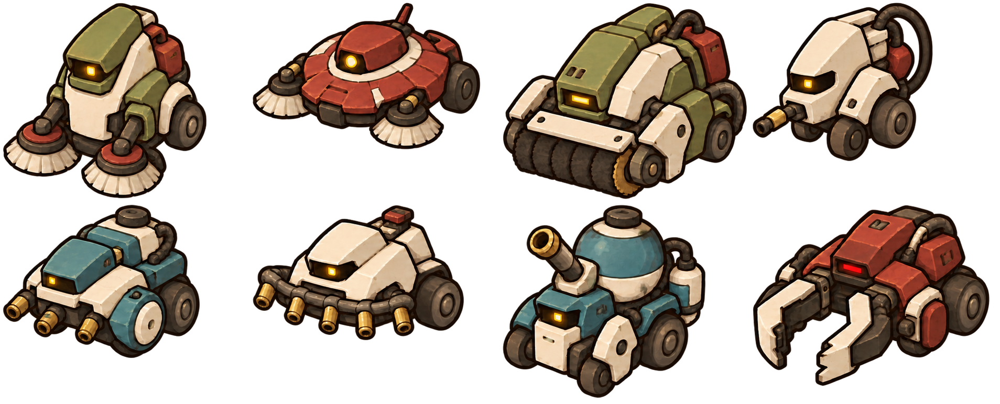
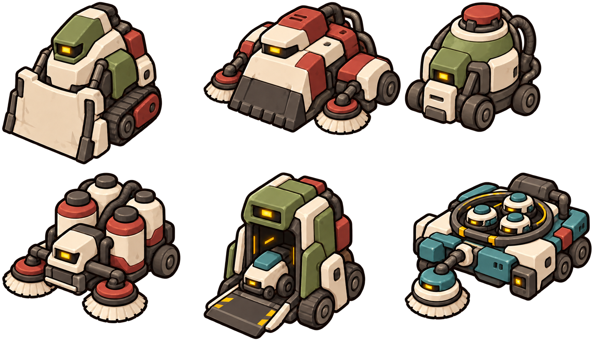
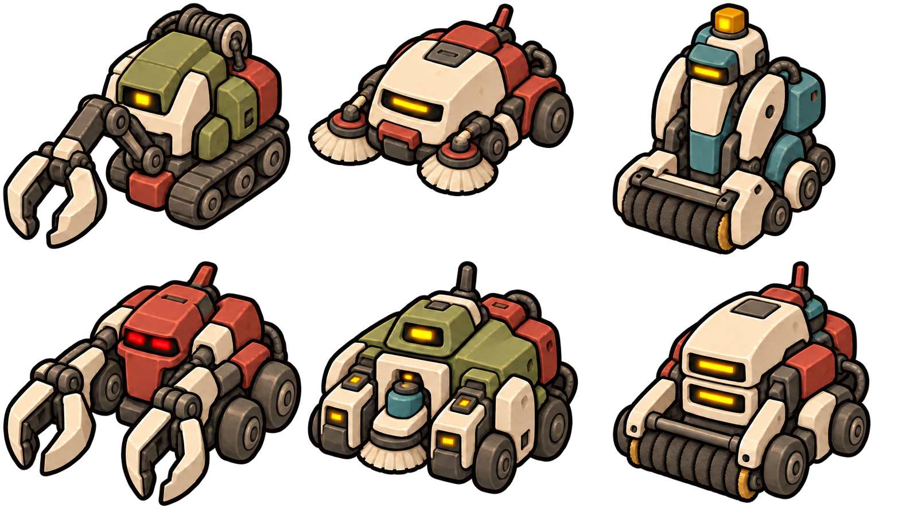
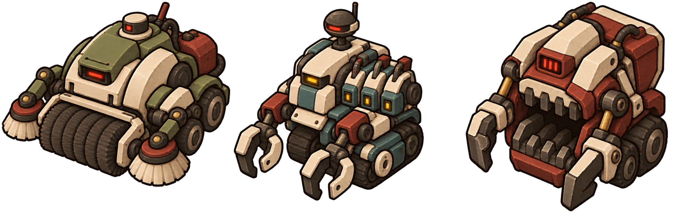

THE NULL LINE 적과 스테이지 설계
15스테이지 전투 구성과 적 디자인 시안 | 2026년 10월 23일
미등록자를 폐기 대상으로 처리하는 도시 기계들을 역할별로 구분하고, 3개 전투 구역을 통해 이동 회피와 처리 순서를 학습하도록 설계한다. 1~10스테이지의 기존 제안 수량과 패턴을 유지하고, 11~15스테이지를 연결한다.
| 구역 | 전투 공간 제안 | 학습과 조합 | 구성 |
|---|
| 1구역 | 시민 서비스 구역 | 추적·사격·돌진 | 1~4 일반전 + 5 보스 |
| 2구역 | 폐기물 회수 구역 | 방어·폭발·소환 | 6~9 일반전 + 10 보스 |
| 3구역 | 말소 집행 구역 | 인양·절단·차폐 | 11~14 일반전 + 15 보스 |
전투 분량
일반전 12스테이지와 보스전 3개. 일반전은 총 36웨이브, 기본 배치 322마리와 소환 추가 최대 34마리다. 보스 증원은 최대 18마리이므로 한 번의 전체 진행에서 일반 적 최대 374마리와 보스 3기를 상대한다.
세계관과 외형 연결
보병·소총병 같은 이름은 전투 역할을 설명하는 작업명이다. 실제 외형은 청소 로봇·감시 드론·회수 장치·진압 기계·철거 설비로 표현한다. 도시는 비어 있어도 정상적으로 작동하며, 적은 악의를 연기하기보다 정해진 업무를 반복한다.
구역 공간명과 기계별 새 이름은 이번 설계의 제안이다. 기존 설정의 열차 거점 역할, 출시명, 중앙 AI의 최종 결말은 이 문서에서 확정하지 않는다.
문서 읽는 순서
공통 전투 규칙 → 1구역 적과 웨이브 → 2구역 적과 웨이브 → 3구역 적과 최종 보스 → 총량과 조정 기준 → 이미지 비교판 순서로 구성한다.
공통 수치와 전투 진행
자동 공격과 이동 중심의 전투를 기준으로 한다
| 기호와 단위 | 정의 |
|---|
| H | 기본 보병 한 마리의 최대 체력. 적 체력 배수는 모두 H 기준이다. |
| 피해 % | 플레이어 최대 체력 대비 1회 피해. 실제 플레이어 성장과 방어 계산 전 초안이다. |
| U | 플레이어 충돌 몸체 너비. 현재 참고 값 48px. 표시 그림 64px와 구분한다. |
| 이동 배수 | 보병 이동 속도 기준. 실제 px/s와 탄속은 현재 캐릭터 속도에 맞춰 후속 조정한다. |
| 전조와 주기 | 전조는 공격 판정 전 준비 시간. 사격 주기는 준비 시작 간격이며 대기 규칙으로 늦어질 수 있다. |
• 표의 수량은 웨이브당 고정 배치다. 별도 지연 표시가 없으면 전원 웨이브 시작에 등장한다.
• 모든 배치 적과 소환 적을 처치하면 4초 뒤 다음 웨이브. 웨이브 사이 자동 회복은 없다.
• 적은 플레이어와 겹치거나 공격 범위 안에 즉시 등장하지 않는다. 등장 후 1초간 공격 금지. 소환자는 별도 첫 시전 대기 2초를 적용한다.
• 적의 공격은 방향과 범위를 미리 표시한다. 1구역 추적형과 모든 직선 돌진은 준비 시작 후 방향을 고정한다.
• 일반 적은 원래 공격을 시작할 때만 피해 판정을 만들며 단순 접촉 피해는 주지 않는 기준으로 통일한다.
• 마지막 적 또는 보스 처치 시 남은 적 탄·폭발·절단 판정을 제거한다. 일반 적 한 마리 사망만으로 이미 발사된 탄이 사라지지는 않는다.
• 스테이지 내에서 같은 적의 체력·피해를 임의로 올리지 않는다. 성장 보정이 필요하면 구역별 별도 계수로 검토한다.
수치와 목표 전투 시간은 플레이 테스트 시작값이다. 수동 조준·회피 구르기·방패 파괴 같은 신규 플레이어 기능을 필수 대응으로 요구하지 않는다. 이동만으로 공격을 피하고 자동 공격이 닿는 자리를 잡을 수 있어야 한다.
1구역 추적형과 돌진형
역할명과 실제 기계 디자인을 함께 사용한다
| ID와 역할 | 기계 외형 제안 | 체력 | 행동과 대응 |
|---|
| E01 보병 | 순찰 청소기 | 1.0H | 보통 속도 접근. 0.5초 준비 후 근접 공격 6%. 공격 후 0.8초 빈틈. 낮은 사각 몸체와 전면 솔. |
| E02 질주병 | 고속 청소기 | 0.6H | 이동 1.35배. 0.35초 준비 후 공격 4%. 헛치면 1초 정지. 좁은 쐐기형 몸체와 작은 바퀴. |
| E03 중보병 | 압축 청소차 | 2.5H | 이동 0.70배. 1초 준비 후 넓은 근접 공격 12%. 공격 후 1.5초 빈틈. 넓은 궤도와 압축 삽. |
| E08 돌격병 | 통로 정리기 | 1.4H | 0.9초 경로 표시 후 직선 돌진 10%. 돌진 후 1.4초 정지. 주기 약 4.5초. 낮은 전면 램과 옆 피스톤. |
보병·질주병·중보병은 공격 준비 시 방향을 고정한다. 중보병은 방패나 정면 무적 없이 체력과 넓은 공격으로 차별화한다. 돌격병은 돌진 중 방향을 바꾸지 않으며 벽에 닿으면 즉시 멈춘다.
X01 정예 돌격병
체력 4H, 그림 크기 일반 돌격병의 1.3배. 일반 돌진 뒤 0.7초간 새 경로를 표시하고 한 번 더 돌진한다. 두 번째 돌진 후 2초 정지한다. 피해는 회당 10%로 유지한다. 두 번째 경로를 표시하기 전에 플레이어 방향을 새로 잡는다.
외형은 기존 램 차체를 확대하고 옆 피스톤·쌍 경고등·넓은 황토색 식별 띠를 추가한다. 색상만 바꾸지 않고 램과 피스톤 실루엣으로 알아볼 수 있게 한다.
첫 구역 배치 원칙
추적형은 함께 몰리더라도 모든 방향에서 플레이어를 완전히 봉쇄하지 않게 분산한다. 질주병의 공격 후 정지와 중보병의 긴 준비 시간이 이동 공간을 만드는 역할을 한다.
1구역 사격형 세부 유형
모든 사격형의 체력은 0.8H다
| ID와 역할 | 기계 외형 | 발사 방식 | 전조 / 주기 | 피해 |
|---|
| E04 소총병 | 단발 감시 드론 | 직선탄 1발 | 0.6초 / 2.4초 | 5% |
| E05 점사병 | 점사 감시 드론 | 0.2초 간격 3발 | 0.8초 / 3.2초 | 발당 3% |
| E06 산탄병 | 확산 감시 드론 | 60도 부채꼴 5발 동시 | 0.9초 / 3.6초 | 발당 4% |
| E07 유탄병 | 유해물 처리기 | 바닥 조준 후 1회 폭발 | 표시 후 1.3초 / 4.5초 | 10% |
• 소총병은 렌즈 옆 단일 방출구, 점사병은 세 개의 좁은 노즐, 산탄병은 넓게 벌어진 방사형 노즐 묶음으로 구분한다. 노즐 수 자체가 실제 탄 수를 제한하지는 않는다.
• 유탄병은 바퀴형 몸체, 상향 투척 컵과 밀폐 탄통으로 드론과 구분한다.
• 사격형은 적정 거리까지 이동한 뒤 멈춰서 발사한다. 플레이어 접근 시 계속 도망가지 않고 공격 후에만 짧게 자리를 옮긴다.
• 점사병은 세 발을 쏘는 동안 조준 방향을 갱신하지 않는다. 첫 탄을 피한 후에도 이동하면 된다.
• 산탄병 한 번의 발사에서 여러 탄과 겹쳐도 피해는 한 번만 적용한다.
• 유탄병은 위치 표시 순간에 조준점을 고정한다. 착탄 직접 피해와 잔류 장판은 없고 폭발 피해만 적용한다.
• 일반 탄과 절단선은 벽을 관통하지 않는다. 공중 연출이 있는 유탄은 투척 시 시야가 확보된 바닥 위치만 선택한다.
사격 동시성
사격형은 최대 2마리까지만 동시에 한 발사 동작을 수행한다. 점사 전체를 하나의 발사 동작으로 취급한다. 다른 사격형은 이동하거나 순서를 기다리며, 공격 대기로 밀린 주기를 한꺼번에 몰아 쏘지 않는다.
1구역 1스테이지와 2스테이지
기본 추적 후 직선탄과 점사를 학습한다
1스테이지 추적과 이동
기본 접근과 빠른 접근을 구분한다. 사격형 없이 이동과 자동 공격의 리듬을 익힌다.
| 웨이브 | 등장 구성 | 기본 | 추가 상한 | 최대 |
|---|
| 1 | 보병 6 | 6 | 0 | 6 |
| 2 | 보병 8 + 질주병 2 | 10 | 0 | 10 |
| 3 | 보병 8 + 질주병 4 | 12 | 0 | 12 |
스테이지 합계 기본 28마리 / 소환 추가 최대 0마리 / 최대 28마리
2스테이지 직선탄과 연속탄
점사 중 조준은 갱신되지 않는다. 첫 탄을 피한 뒤에도 이동을 유지하도록 구성한다.
| 웨이브 | 등장 구성 | 기본 | 추가 상한 | 최대 |
|---|
| 1 | 보병 6 + 소총병 2 | 8 | 0 | 8 |
| 2 | 보병 6 + 질주병 2 + 점사병 2 | 10 | 0 | 10 |
| 3 | 보병 6 + 소총병 2 + 점사병 1 | 9 | 0 | 9 |
스테이지 합계 기본 27마리 / 소환 추가 최대 0마리 / 최대 27마리
사격형은 서로 떨어뜨려 배치하되 플레이어를 모든 방향에서 포위하지 않는다. 첫 원거리 적은 플레이어가 접근 경로와 발사 전조를 확인할 수 있는 위치에 둔다.
1구역 3스테이지와 4스테이지
정예와 범위 공격을 종합한다
3스테이지 무게와 돌진
중보병의 느린 압박 속에서 돌진 전조를 읽고, 정예의 두 번째 돌진까지 확인한다.
| 웨이브 | 등장 구성 | 기본 | 추가 상한 | 최대 |
|---|
| 1 | 보병 6 + 중보병 2 + 돌격병 1 | 9 | 0 | 9 |
| 2 | 보병 6 + 질주병 3 + 돌격병 2 | 11 | 0 | 11 |
| 3 | 보병 6 + 중보병 2 + 소총병 2 + 정예 돌격병 1
※ 정예 돌격병는 2초 늦게 등장 | 11 | 0 | 11 |
스테이지 합계 기본 31마리 / 소환 추가 최대 0마리 / 최대 31마리
4스테이지 범위 공격 종합
유탄과 부채꼴 탄을 배운 뒤 종합전으로 연결한다. 마지막에는 사격형이 종류별 1마리씩 등장한다.
| 웨이브 | 등장 구성 | 기본 | 추가 상한 | 최대 |
|---|
| 1 | 보병 6 + 유탄병 2 | 8 | 0 | 8 |
| 2 | 보병 6 + 질주병 2 + 산탄병 2 | 10 | 0 | 10 |
| 3 | 보병 6 + 중보병 2 + 소총병 1 + 점사병 1 + 유탄병 1 + 산탄병 1 + 돌격병 1 | 13 | 0 | 13 |
스테이지 합계 기본 31마리 / 소환 추가 최대 0마리 / 최대 31마리
4스테이지 마지막 웨이브는 총 13마리다. 사격형은 네 종류 각 1마리이며 유탄병이나 산탄병을 제거하면 이동 공간이 넓어져야 한다. 정예 돌격병 지연 등장은 3스테이지 3웨이브에만 적용한다.
5스테이지 보스 구역 정리기
전투 역할명 돌격대장 | 체력 25H | 목표 90~120초
궤도 청소·압축 장비가 미등록 대상을 제거하는 형태다. 전면 램, 상부 타격 팔, 측면 탄 방출구와 투척 컵이 공격의 출처를 보여준다. 일반 잡몹이나 소환은 없다.
| 패턴 | 전조와 공격 | 공격 후 빈틈 | 피해 |
|---|
| 크게 내려찍기 | 1초 준비 후 전방 넓은 범위 타격 | 1.6초 | 15% |
| 조준 점사 | 0.8초 조준 후 고정 방향으로 0.25초 간격 3발 | 1.2초 | 발당 4% |
| 장거리 돌진 | 1.2초 경로 표시 후 직선 돌진. 벽에 닿으면 정지 | 2초 | 15% |
| 유탄 투척 | 표시 순간 플레이어 위치 고정. 1.4초 후 폭발 | 1.4초 | 12% |
1단계 체력 100~50퍼센트
조준 점사 → 장거리 돌진 → 크게 내려찍기 → 유탄 투척 → 반복. 시작 후 2초 대기한다. 빈틈이 끝나면 0.8초 이동·방향 조정 후 다음 패턴을 준비한다. 내려찍기 차례에 플레이어가 멀면 최대 2초 접근한 뒤 공격한다.
2단계 체력 50퍼센트 이하
현재 공격이 끝나면 1.5초간 포효에 해당하는 기계 경고 동작을 한다. 전환에는 피해가 없고 남은 보스 탄·폭발 표시를 제거한다. 단계 전환으로 현재 공격을 중간 취소하며 즉시 피해를 주지 않는다.
순서는 조준 점사 → 연속 돌진 → 크게 내려찍기 → 이중 유탄. 첫 돌진 후 0.8초간 새 경로를 표시하고 두 번째 돌진을 한다. 두 번째 돌진 뒤 빈틈은 2.5초다.
이중 유탄은 첫 표시 후 0.6초 뒤 그때의 플레이어 위치에 두 번째 표시를 만든다. 각각 표시 1.4초 후 폭발한다. 전조를 일괄 단축하지 않고 두 번째 공격까지 확인하도록 만든다.
2구역 방어형과 자폭형
신규 4유형 | 유탄병과 접근 자폭형을 구분한다
| ID와 역할 | 체력 / 이동 | 행동과 빈틈 | 피해 |
|---|
| E09 방패병 | 1.8H / 0.80배 | 정면 120도 피해 70% 감소. 0.8초 준비 후 찌르기. 공격 후 1.2초 정지 | 8% |
| E10 강습 방패병 | 2.2H / 0.90배 | 정면 120도 피해 50% 감소. 1초 표시 후 짧은 방패 돌진. 공격 후 1.6초 정지 | 10% |
| E11 자폭병 | 0.6H / 1.15배 | 접근 후 정지. 0.9초 동안 범위 표시 후 반경 2.5U 폭발 | 10% |
| E12 분열 자폭병 | 0.9H / 0.85배 | 1.2초 준비 후 반경 2U 폭발. 이후 소형 폭탄 3개가 0.8초 후 반경 1.2U 폭발 | 본체 10% / 소형 6% |
방어형 대응
공격 준비가 시작되면 방향을 고정한다. 공격 후 빈틈에는 방패를 내려 정면 피해 감소를 해제한다. 강습 방패병의 돌진 거리는 일반 돌격병의 절반이다. 방패병은 수직 방벽, 강습형은 넓게 기울어진 방벽과 큰 피스톤으로 구분한다.
자폭형 대응
준비 중 처치하면 본체 폭발과 소형 폭탄 생성이 모두 취소된다. 소형 폭탄은 본체 주위의 서로 다른 세 방향에 떨어지며 착지 지점을 미리 표시한다. 분열 자폭병 한 개체의 본체·소형 폭탄 전체에서 플레이어는 최대 한 번만 피해를 받는다. 적끼리는 폭발 피해를 주지 않는다.
자폭병은 단일 밀폐 처리통과 좁은 바퀴 차체, 분열형은 세 개의 처리통과 넓은 받침대로 구분한다. 해골·생체 물질 없이 안전 처리 설비가 대상을 제거하는 인상을 준다.
2구역 소환형과 정예
실제 생성 수는 처치 시점에 따라 달라진다
| ID와 역할 | 체력 | 소환 / 전조 | 완료 후 대기 | 개체당 상한 |
|---|
| E13 징집관 | 1.8H | 보병 2 / 1.3초 | 8초 | 2회 총 4 |
| E14 추격 지휘병 | 1.5H | 질주병 2 / 1.5초 | 9초 | 2회 총 4 |
| X02 정예 징집관 | 4H | 보병 3 / 1.3초 | 8초 | 2회 총 6 |
• 일반 소환형 이동은 보병의 0.80배다. 거리를 벌리되 끝없이 도망가지 않는다. 정예도 같은 이동 규칙을 따른다.
• 등장 후 첫 소환 준비까지 2초 대기한다. 소환 위치 표시는 시전 시작에 나타나며 최소 1초 유지한다.
• 일반 소환자는 자신이 소환한 적 2마리, 정예는 3마리가 살아 있으면 다음 소환을 대기한다.
• 모든 소환자가 만든 적의 전장 전체 생존 상한은 4마리다. 한 소환 묶음이 상한을 넘으면 묶음 전체가 들어갈 여유가 생길 때까지 대기한다.
• 소환 성공 시에만 1회 사용으로 계산한다. 최대 사용 횟수와 최대 생성 수를 넘어 보충 소환하지 않는다.
• 소환자 사망 시 진행 중인 시전은 취소한다. 이미 생성된 적은 남고 웨이브 완료 조건에도 포함된다.
• 소환 적은 일반 보병·질주병과 능력치가 같으며 소환 능력은 없다.
기계 외형
징집관은 사각 배출구와 고리형 안테나가 달린 이동 배차기다. 추격 지휘병은 좁은 차체·뒤로 기운 쌍 안테나·분리된 배출 슬롯으로 빠른 청소기를 내보낸다. 정예 징집관은 배출구 3개와 고리 안테나 2개, 쌍 경고등으로 일반형과 구분한다.
새 적을 만드는 마법이나 생체 생산이 아니라 대기 중인 도시 기계를 전장에 배차하는 동작으로 표현한다.
2구역 6스테이지와 7스테이지
방어 방향과 폭발 범위를 익힌다
6스테이지 방패와 측후면
방패병을 정면에서 오래 때리기보다 공격을 유도하고 옆으로 이동해 자동 공격을 맞힌다.
| 웨이브 | 등장 구성 | 기본 | 추가 상한 | 최대 |
|---|
| 1 | 보병 6 + 방패병 2 | 8 | 0 | 8 |
| 2 | 보병 6 + 질주병 2 + 강습 방패병 1 | 9 | 0 | 9 |
| 3 | 보병 5 + 방패병 2 + 소총병 2 + 돌격병 1 | 10 | 0 | 10 |
스테이지 합계 기본 27마리 / 소환 추가 최대 0마리 / 최대 27마리
7스테이지 폭발과 이동 경로
자폭 준비 중 처치하면 폭발을 취소할 수 있다. 분열 폭탄 착지점까지 보고 다음 자리를 고른다.
| 웨이브 | 등장 구성 | 기본 | 추가 상한 | 최대 |
|---|
| 1 | 보병 6 + 자폭병 2 | 8 | 0 | 8 |
| 2 | 보병 5 + 질주병 2 + 분열 자폭병 1 + 소총병 1 | 9 | 0 | 9 |
| 3 | 보병 4 + 방패병 1 + 자폭병 2 + 분열 자폭병 1 + 점사병 1 | 9 | 0 | 9 |
스테이지 합계 기본 26마리 / 소환 추가 최대 0마리 / 최대 26마리
6스테이지 첫 방패병 두 마리는 서로 떨어뜨린다. 7스테이지 자폭형은 플레이어의 바로 뒤에서 생성하지 않고 접근 과정이 화면 안에서 보이도록 배치한다.
2구역 8스테이지와 9스테이지
소환과 정예를 함께 처리한다
8스테이지 소환자 우선 처리
소환자는 유한 횟수만 증원한다. 일찍 제거하면 실제 처치 수와 전투 시간이 줄어든다.
| 웨이브 | 등장 구성 | 기본 | 추가 상한 | 최대 |
|---|
| 1 | 보병 6 + 징집관 1 | 7 | 4 | 11 |
| 2 | 보병 4 + 질주병 4 + 방패병 1 + 추격 지휘병 1 | 10 | 4 | 14 |
| 3 | 보병 4 + 방패병 2 + 소총병 1 + 정예 징집관 1
※ 정예 징집관는 2초 늦게 등장 | 8 | 6 | 14 |
스테이지 합계 기본 25마리 / 소환 추가 최대 14마리 / 최대 39마리
9스테이지 처리 순서 종합
폭발형으로부터 공간을 확보하고 소환자를 제거한다. 정예 돌격병의 빈틈을 이동 기회로 쓴다.
| 웨이브 | 등장 구성 | 기본 | 추가 상한 | 최대 |
|---|
| 1 | 보병 4 + 방패병 2 + 유탄병 1 + 자폭병 2 | 9 | 0 | 9 |
| 2 | 보병 4 + 질주병 2 + 강습 방패병 1 + 산탄병 1 + 추격 지휘병 1 | 9 | 4 | 13 |
| 3 | 보병 4 + 방패병 1 + 중보병 1 + 소총병 1 + 점사병 1 + 분열 자폭병 1 + 징집관 1 + 정예 돌격병 1
※ 정예 돌격병는 2초 늦게 등장 | 11 | 4 | 15 |
스테이지 합계 기본 29마리 / 소환 추가 최대 8마리 / 최대 37마리
8스테이지의 정예 징집관은 2초 지연 등장 후 다시 첫 시전 대기 2초를 적용한다. 9스테이지 마지막 정예 돌격병도 2초 늦게 등장한다. 수량 표의 추가 상한은 소환자를 살려두었을 때 가능한 최대치다.
10스테이지 보스 회수 지휘기
전투 역할명 군단 지휘관 | 체력 40H | 목표 120~150초
도시 기계를 배차하는 이동식 관리 설비다. 기본 보스와 최대 4마리의 증원이 공간을 나누어 압박한다. 증원 처치가 보스 피해의 필수 조건은 아니다.
| 패턴 | 전조와 행동 | 빈틈 | 피해 |
|---|
| 지휘 사격 | 0.9초 조준 후 고정 방향으로 0.25초 간격 3발 | 1.3초 | 발당 5% |
| 연속 포격 | 0.7초 간격으로 현재 위치 두 번 표시. 각각 1.4초 후 폭발 | 마지막 투척 후 1.5초 | 폭발당 12% |
| 전방 휘두르기 | 1초 준비 후 전방 150도 타격 | 1.8초 | 15% |
| 진군 명령 | 1.2초 신호 후 증원 이동 속도 25% 증가 6초 | 2초 | 직접 피해 없음 |
단계와 순서
1단계는 지휘 사격 → 연속 포격 → 진군 명령 → 지휘 사격 → 전방 휘두르기. 시작 후 2초 대기하고 빈틈 뒤 0.8초 방향 조정. 증원이 없으면 진군 명령을 생략한다. 휘두르기는 멀리 있는 플레이어에게 최대 2초 접근한 뒤 실행한다.
체력 50% 이하에서 현재 공격 완료 후 1.5초 전환한다. 보스 탄과 폭발 표시를 제거하되 살아 있는 증원은 유지한다. 전환 중 새 증원 공격은 시작하지 않고, 전환 종료 후 재개한다.
2단계는 지휘 사격의 각 발사가 좁은 부채꼴 3발로 변경되어 총 3회 발사한다. 조준은 처음에 고정하며 같은 부채꼴은 피해 한 번만 적용한다. 포격은 3곳, 진군 명령은 8초로 증가한다. 전조·표시 간격·기본 순서는 유지한다.
진군 명령은 중첩하지 않는다. 탄속이나 공격 전조를 줄이지 않고 이동 속도만 강화한다. 보스 사격 중 증원 사격형은 최대 1마리만 발사한다.
회수 지휘기 증원과 호출 처리
체력 구간별 한 번씩 | 총 최대 12마리
| 체력 도달 | 증원 구성 | 수 |
|---|
| 75% | 보병 2 + 방패병 1 + 소총병 1 | 4 |
| 50% | 질주병 2 + 중보병 1 + 점사병 1 | 4 |
| 25% | 질주병 2 + 방패병 1 + 유탄병 1 | 4 |
• 호출 시 1.5초 신호 동작과 등장 위치 표시. 외곽 두 지점에서 2마리씩 등장한다.
• 기존 증원이 남아 있으면 다음 호출을 대기한다. 증원 생존 상한은 4마리다.
• 보스 체력이 여러 임계값을 빠르게 통과하면 미사용 호출을 75% → 50% → 25% 순서로 대기열에 넣는다.
• 현재 공격과 빈틈이 끝나면 단계 전환 → 대기 중 증원 호출 → 일반 패턴 순서로 처리한다.
• 체력 잠금이나 증원 처리 강제 무적은 없다. 보스가 먼저 사망하면 대기 중 호출은 취소한다.
• 증원에는 소환자가 없으므로 최대 수가 추가로 늘어나지 않는다.
• 보스의 진군 명령은 증원에게만 적용한다. 단계 전환 동작이 끝나기 전 새 공격을 시작하지 않는 규칙도 증원에게 적용한다.
두 번째 보스의 공략 방향
방패병만 따라다니면 사격형이 남고, 보스만 공격하면 증원이 이동 경로를 압박한다. 빠른 적과 사격형을 정리한 뒤 보스의 포격 빈틈에 접근하는 선택이 유효해야 한다. 증원을 전부 처치하지 않고 보스에게 집중하는 선택도 허용한다.
3구역 신규 적 세부 유형
인양 회수기와 선형 절단기로 이동 경로를 바꾼다
E15 인양 회수기
체력 2H, 이동은 보병의 0.65배. 궤도 적재함 위에 케이블 권양기와 두 갈래 갈고리를 단 회수 장치다. 공격 주기는 준비 시작 기준 4.8초다.
| 순서 | 행동 |
|---|
| 조준 | 1초 동안 길이 8U·폭 0.8U 직선 경로를 표시하고 방향을 고정한다. |
| 발사 | 갈고리를 직선 발사한다. 벽이나 첫 대상에 닿으면 멈춘다. 피격 시 6% 피해. |
| 인양 | 맞은 대상을 최대 2U만 0.35초에 걸쳐 끌어온다. 이동 입력은 유지하고 기절은 주지 않는다. |
| 빈틈 | 갈고리 회수 후 1.6초 정지. 근접 후속 공격을 자동으로 연결하지 않는다. |
이동 끝점은 장애물·다른 적의 몸체·이미 표시된 공격 범위를 피하는 가장 가까운 유효 지점으로 줄인다. 유효 지점이 없으면 끌어당기기 없이 피해만 적용한다. 인양 후 2초 동안 다른 인양에 다시 끌려가지 않는다.
E16 선형 절단기
체력 1.1H, 이동 0.70배. 작은 절단 작업차와 길쭉한 발광 슬릿·냉각 코일로 구분한다. 1.2초간 길이 9U·폭 1U 절단선을 표시하고, 같은 위치에 0.5초 동안 절단 빔을 낸다. 피해 10%, 한 공격에서 한 번만 피해를 준다.
준비 시작 시 선 방향을 고정하며 회전·추적하지 않는다. 벽에서 잘리고 벽 뒤에 판정을 만들지 않는다. 발사 후 1.4초 빈틈, 준비 시작 간격은 최소 4.5초다. 선을 가로질러 건너는 대신 준비 중 옆으로 이동하는 대응을 의도한다.
3구역 차폐형과 정예 절단기
방어를 무한히 겹치거나 전장을 완전히 막지 않는다
E17 차폐 중계기
체력 1.5H, 이동은 보병의 0.75배. 바퀴 달린 수직 제어함과 접이식 육각 방출판·측면 코일로 구분한다. 직접 피해 공격은 없다.
| 항목 | 규칙 |
|---|
| 준비와 지속 | 1.2초 연결 준비 후 반경 7U 안의 가까운 적 최대 2마리를 4초간 보호한다. 준비 시작 간격 최소 6초. |
| 보호 효과 | 받는 피해 25% 감소. 회복·부활·무적은 없으며 다른 중계기 효과와 중첩하지 않는다. |
| 대상 제한 | 자신·다른 중계기·보스는 보호하지 않는다. 두 대상이 죽거나 7U를 벗어나면 해당 연결만 종료하며 도중 재선정하지 않는다. |
| 방패와 조합 | 방패 감소와 곱연산하되 최종 피해 감소는 70%를 넘지 않는다. 방패병 측후면에는 중계 효과만 적용된다. |
| 제거와 표시 | 중계기 사망 시 모든 연결 즉시 해제. 얇은 점선과 대상 테두리로 연결을 보여주며 큰 불투명 돔을 만들지 않는다. |
X03 정예 절단기
체력 3.3H, 크기 일반 절단기의 1.25배. 쌍 절단 헤드와 황토색 식별 띠를 사용한다. 첫 선을 1.2초 표시한 뒤 0.5초 발사하고, 0.4초 대기 후 새 방향을 잡아 두 번째 선을 1초 표시하고 0.5초 발사한다. 피해는 회당 10%, 두 번째 발사 뒤 1.8초 빈틈이다. 다음 연속 공격 시작까지 최소 7초를 둔다.
두 절단선은 순차 실행하고 동시에 교차하지 않는다. 하나의 연속 공격으로 특수 공격 순서를 예약해 두 번째 전조 직전에 다른 특수 공격이 끼어들지 않게 한다. 다른 원거리 일반탄은 사격 상한 안에서 유지할 수 있다.
3구역 11스테이지와 12스테이지
끌어당기기 다음에 절단선을 학습한다
11스테이지 인양 경로 회피
갈고리 표시선을 옆으로 벗어난다. 먼저 소수의 인양 회수기로 끌어당기기 동작을 익힌다.
| 웨이브 | 등장 구성 | 기본 | 추가 상한 | 최대 |
|---|
| 1 | 보병 6 + 인양 회수기 1 | 7 | 0 | 7 |
| 2 | 보병 4 + 방패병 1 + 인양 회수기 2 + 소총병 1 | 8 | 0 | 8 |
| 3 | 질주병 3 + 중보병 1 + 인양 회수기 1 + 돌격병 1 + 점사병 1 | 7 | 0 | 7 |
스테이지 합계 기본 22마리 / 소환 추가 최대 0마리 / 최대 22마리
12스테이지 절단선과 안전 통로
짧게 유지되는 절단선을 피해 통로를 바꾼다. 도주 경로를 사격과 폭발로 완전히 막지 않는다.
| 웨이브 | 등장 구성 | 기본 | 추가 상한 | 최대 |
|---|
| 1 | 보병 6 + 선형 절단기 2 | 8 | 0 | 8 |
| 2 | 보병 4 + 방패병 1 + 선형 절단기 1 + 유탄병 1 + 자폭병 1 | 8 | 0 | 8 |
| 3 | 보병 4 + 질주병 2 + 선형 절단기 2 + 산탄병 1 + 강습 방패병 1 | 10 | 0 | 10 |
스테이지 합계 기본 26마리 / 소환 추가 최대 0마리 / 최대 26마리
11스테이지 첫 인양 회수기는 다른 적보다 뒤쪽에 두되 갈고리 발사체의 출처가 보이게 한다. 12스테이지에서는 절단선이 통로를 막아도 반대편 또는 옆으로 돌아갈 폭 3U 이상의 길을 남긴다.
3구역 13스테이지와 14스테이지
차폐 연결을 끊고 종합전을 돌파한다
13스테이지 차폐와 정예 절단
차폐 대상과 연결된 중계기를 확인한다. 중계기를 제거하거나 연결이 끝난 틈에 공격한다.
| 웨이브 | 등장 구성 | 기본 | 추가 상한 | 최대 |
|---|
| 1 | 보병 4 + 방패병 1 + 차폐 중계기 1 | 6 | 0 | 6 |
| 2 | 보병 4 + 질주병 2 + 추격 지휘병 1 + 차폐 중계기 1 | 8 | 4 | 12 |
| 3 | 보병 4 + 방패병 1 + 선형 절단기 1 + 차폐 중계기 1 + 정예 절단기 1
※ 정예 절단기는 2초 늦게 등장 | 8 | 0 | 8 |
스테이지 합계 기본 22마리 / 소환 추가 최대 4마리 / 최대 26마리
14스테이지 최종 종합전
인양·절단·차폐·소환을 함께 상대한다. 신규 적을 추가하지 않고 앞서 배운 대응을 결합한다.
| 웨이브 | 등장 구성 | 기본 | 추가 상한 | 최대 |
|---|
| 1 | 보병 4 + 인양 회수기 1 + 선형 절단기 1 + 분열 자폭병 1 + 소총병 1 | 8 | 0 | 8 |
| 2 | 보병 4 + 질주병 2 + 강습 방패병 1 + 추격 지휘병 1 + 차폐 중계기 1 | 9 | 4 | 13 |
| 3 | 보병 4 + 방패병 1 + 중보병 1 + 인양 회수기 1 + 선형 절단기 1 + 차폐 중계기 1 + 징집관 1 + 정예 돌격병 1
※ 정예 돌격병는 2초 늦게 등장 | 11 | 4 | 15 |
스테이지 합계 기본 28마리 / 소환 추가 최대 8마리 / 최대 36마리
13스테이지 마지막 정예 절단기와 14스테이지 마지막 정예 돌격병은 각각 2초 지연 등장한다. 마지막 종합전에도 소환자는 1마리뿐이며 신규 적을 추가하지 않는다. 소환 포함 동시 생존 수는 최대 15마리다.
15스테이지 최종 보스 말소 집행기
체력 55H | 목표 150~180초 | 3단계 전투
중앙 AI가 사용하는 현장 말소 장치라는 제안이다. 네 개의 낮은 궤도 받침, 큰 행정 스캐너, 비대칭 집게 팔과 절단 헤드가 결합된 철거 설비다. 이 기계의 파괴가 도시 전체 AI의 소멸이나 이야기의 최종 결말을 뜻하지는 않는다.
| 패턴 | 전조와 공격 | 빈틈 | 피해 |
|---|
| 확인 사격 | 1초 조준 후 고정 방향으로 0.3초 간격 3회 발사. 매회 좁은 부채꼴 3발 | 1.5초 | 탄당 4% |
| 집게 압축 | 1.2초 전방 범위 표시 후 양 집게를 닫아 전방 140도 타격. 후방은 안전 | 2초 | 16% |
| 통로 절단 | 1.4초 표시 후 길이 10U·폭 1U의 고정 직선 빔을 0.6초 유지 | 1.8초 | 12% |
| 회수 돌진 | 1.3초 동안 폭 2U 경로 표시 후 직선 돌진. 벽에 닿으면 정지 | 2.2초 | 15% |
| 바닥 말소 | 2단계부터 사용. 바닥 3곳을 0.6초 간격으로 표시하고 각 1.6초 후 반경 1.5U 타격 | 마지막 표시 후 2초 | 지점당 10% |
확인 사격의 같은 부채꼴에서 여러 탄을 맞아도 피해 한 번만 적용한다. 집게는 플레이어를 붙잡거나 기절시키지 않는다. 바닥 말소는 폭발 후 즉시 끝나며 잔류 장판을 남기지 않는다.
체력 임계값을 넘겨도 진행 중 공격은 마친 뒤 전환한다. 단계 전환은 1.5초, 피해 없음. 보스의 남은 탄·절단·바닥 표시는 제거하고 증원은 유지한다. 전환 동안 증원의 새 공격 시작을 멈추고 종료 후 재개한다. 보스 자체에 체력 잠금은 없다.
말소 집행기 단계와 증원
새 패턴은 2단계까지만 추가한다
1단계 체력 100~65퍼센트
시작 후 2초 대기. 확인 사격 → 회수 돌진 → 집게 압축 → 통로 절단 순서로 반복한다. 각 빈틈 뒤 0.8초 방향 조정. 집게 공격 차례에 플레이어가 멀면 최대 2초 접근한 뒤 공격한다.
2단계 체력 65~30퍼센트
확인 사격 → 통로 절단 → 바닥 말소 → 집게 압축 → 회수 돌진 순서로 반복한다. 통로 절단은 평행한 두 줄로 증가한다. 두 선 사이에 충돌 몸체 기준 폭 3U 이상의 안전 통로를 보장하고, 다른 적이나 장애물 때문에 유효 통로가 없으면 한 줄만 사용한다.
3단계 체력 30퍼센트 이하
패턴 순서와 전조는 2단계를 유지한다. 회수 돌진만 두 번 연속으로 강화한다. 첫 돌진 후 1초간 새 경로를 표시하고 한 번 더 돌진하며, 마지막 빈틈은 2.8초다. 시간 제한 광폭화나 새 공격 종류는 추가하지 않는다.
| 체력 도달 | 증원 구성 | 수 |
|---|
| 65% | 방패병 1 + 선형 절단기 1 + 질주병 1 | 3 |
| 30% | 인양 회수기 1 + 점사병 1 + 질주병 1 | 3 |
각 구간 한 번씩, 총 최대 6마리다. 단계 전환 후 1.5초 호출 동작과 위치 표시를 거쳐 등장한다. 이전 증원이 남으면 다음 호출은 대기하며 증원 생존 상한은 3마리다. 여러 임계값 통과 시 65% → 30% 순으로 대기한다. 보스 사망 시 호출을 취소한다.
보스와 증원의 특수 공격은 같은 순서 제한을 공유한다. 보스의 연속 공격이 끝나면 대기 중 증원 특수 공격 한 번을 우선 허용한 뒤 다음 보스 패턴을 준비한다. 보스 사격 중 증원 사격형은 최대 1마리만 발사한다.
공격 중첩과 공간 확보 규칙
전조를 봤을 때 이동으로 피할 수 있는 구성을 유지한다
• 사격형 동시 발사는 최대 2마리다. 선형 절단기도 빔을 내는 동안 사격 슬롯 하나를 사용한다.
• 특수 공격은 돌진·유탄 조준·산탄 조준·자폭 준비·인양·절단·보스 포격과 바닥 말소를 포함한다. 같은 전장에서 한 번에 한 공격 또는 한 연속 공격만 새로 준비한다.
• 기존 구역의 일반 규칙처럼 이미 발사된 탄과 폭발 표시는 남을 수 있다. 다만 인양은 아래의 추가 제한을 적용한다.
• 인양 시작부터 끌기 종료 후 0.6초까지는 새 돌진·폭발·절단·바닥 말소를 시작하지 않는다. 인양 경로와 끝점에 이미 활성화되거나 예약된 위험이 있으면 인양 시전을 대기한다.
• 정예 절단 2회와 보스 연속 돌진은 하나의 연속 공격으로 순서를 예약한다. 2회째도 각자의 전조를 반드시 보여준다.
• 연속 공격이 끝나면 대기한 다른 개체의 특수 공격을 먼저 허용한다. 한 적이 반복해서 순서를 독점하지 않는다.
• 보스의 평행 절단선과 바닥 말소 배치에는 폭 3U 이상의 유효 도주 경로를 남긴다. 장애물이나 적 몸체로 막히면 공격 지점을 줄이거나 시전을 늦춘다.
• 일반 적 한 개체가 만든 다발탄·분열 폭발·한 줄의 유지 빔은 각각 정해진 단일 공격 피해 횟수를 따른다. 단계 전체를 무적으로 만드는 규칙은 아니다.
자동 공격과 우선 처리
소환자·사격형·중계기를 먼저 처리한다는 뜻은 수동 타깃 지정 기능을 새로 추가한다는 의미가 아니다. 이동으로 가까운 적과 공격 방향을 바꾸어 우선 대상에게 자동 공격이 닿는 자리를 만드는 전투를 의도한다. 실제 무기별 조준 규칙과 조합해 검증해야 한다.
전체 수량과 제작 범위
기본 배치와 조건부 소환을 분리해 집계한다
| 구역 | 일반 웨이브 | 기본 배치 | 소환 추가 | 일반전 최대 | 보스 증원 |
|---|
| 1구역 | 12 | 117 | 0 | 117 | 0 |
| 2구역 | 12 | 107 | 22 | 129 | 12 |
| 3구역 | 12 | 98 | 12 | 110 | 6 |
| 합계 | 36 | 322 | 34 | 356 | 18 |
한 번의 전체 진행에서 일반 적 최대 374마리와 보스 3기를 생성한다. 모든 소환자가 횟수를 소진하고 보스가 모든 증원을 호출한 경우의 상한이며, 실제 처치 수는 더 적을 수 있다. 동시 생존 수와 누적 생성 수를 혼동하지 않는다.
| 제작 분류 | 수 | 내용 |
|---|
| 일반 적 | 17유형 | 추적 3 / 사격 4 / 돌진 1 / 방어 2 / 자폭 2 / 소환 2 / 인양 1 / 절단 1 / 차폐 1 |
| 정예 변형 | 3유형 | 돌격병 / 징집관 / 절단기. 기반 차체·행동을 재사용한다. |
| 보스 | 3기 | 구역 정리기 / 회수 지휘기 / 말소 집행기 |
| 최종 이미지 | 5장 | 일반 적과 정예 비교판 3장 / 보스 비교판 1장 / 전투 화면 컨셉 1장 |
첫 테스트에서 조정할 항목
먼저 1~5스테이지의 이동 회피와 보스 소요 시간을 확인하고 6~10, 11~15 순으로 확장한다. 수치 조정은 적 체력보다 위험 동시성·등장 거리·안전 통로를 먼저 확인한 뒤 진행한다.
4·9·14스테이지 마지막 웨이브에서 소환 상한을 포함한 혼잡도, 인양 끝점과 폭발 예약의 겹침, 자동 공격으로 방패 측후면과 소환자를 공략할 수 있는지 확인한다. 현재 문서와 시안 제작은 실제 게임 밸런스 테스트를 대신하지 않는다.
현재 게임용 적 이미지
이 문서의 전투 설계는 유지하고 이전 비교 시안 부록은 제거했다. 현재 게임은 아래 아틀라스를 사용한다. 프레임별 역할과 표시 크기는 src/config/enemyRoster.ts와 public/assets/enemies/sheet-*.json이 기준이다.

아틀라스 0 · 패킹된 원본 픽셀, 실제 표시 배율은 게임 설정 참조
아틀라스 1 · 패킹된 원본 픽셀, 실제 표시 배율은 게임 설정 참조
아틀라스 2 · 패킹된 원본 픽셀, 실제 표시 배율은 게임 설정 참조
아틀라스 3 · 패킹된 원본 픽셀, 실제 표시 배율은 게임 설정 참조